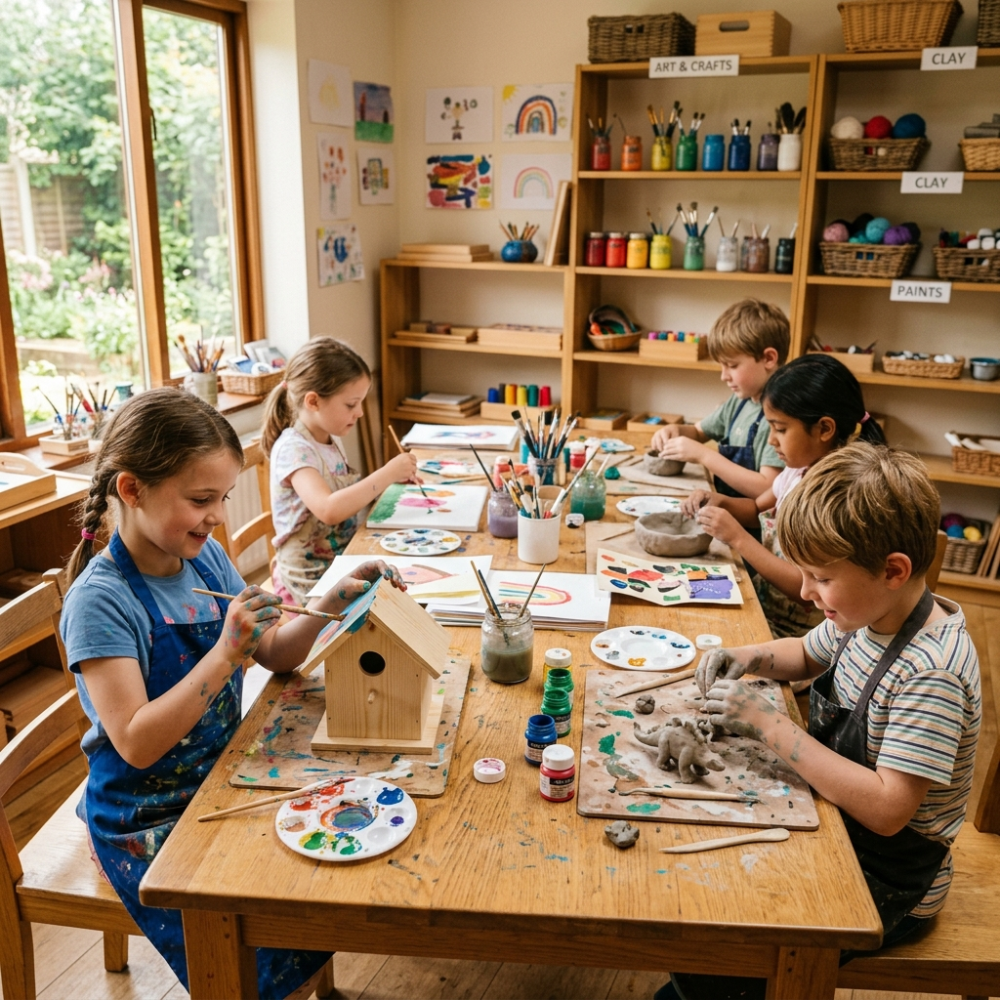

Our programs.

Toddler community
Our toddler community provides a gentle bridge from home to school. In a warm, prepared environment, children develop independence through meaningful work — dressing themselves, preparing snacks, caring for plants, and exploring sensory materials.
Each child is supported by AMI-trained guides who observe carefully and follow the child's emerging interests and abilities.

Primary preschool
The primary classroom is the heart of Montessori education. In a three-year cycle, children work across five interconnected curriculum areas with beautiful, hands-on materials that make abstract concepts concrete.
Mixed-age grouping allows younger children to learn from older peers, while older children develop leadership and consolidate their learning through mentorship.

Kindergarten
The culminating year of the primary cycle. Children who have spent two or more years in our program reach a powerful stage of synthesis — connecting knowledge across disciplines and leading the classroom community.
This year builds confidence, executive function skills, and the academic foundation for a successful transition to elementary education.

After school enrichment
Our after school program extends the Montessori experience with enrichment activities including art, music, gardening, and nature exploration. Children have time for homework support in a calm, structured environment.
This program is available to both Bodhi Minds students and children from other schools who want to experience Montessori-inspired learning.
At a glance.
| Feature | Toddler | Preschool | Kindergarten | After School |
|---|---|---|---|---|
| Age range | 18m – 3y | 3 – 6y | 5 – 6y | 6 – 9y |
| Hours | Half day | Full day | Full day | Afternoon |
| AMI guides | ✓ | ✓ | ✓ | ✓ |
| Outdoor learning | ✓ | ✓ | ✓ | ✓ |
| Math curriculum | — | ✓ | ✓ | — |
| Art & music | ✓ | ✓ | ✓ | ✓ |
| Lunch included | — | ✓ | ✓ | — |
Not sure where to start?
Schedule a campus tour and our team will help you find the perfect program for your child.